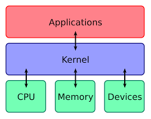
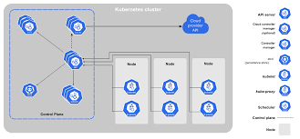

O kernel é o coração de um sistema operacional que faz a ponte entre o software e o hardware e controla processos, memória, dispositivos e chamadas do sistema.

O Kubernetes tem comandos integrados para lidar com grande parte do trabalho pesado que envolve o gerenciamento de aplicativos, permitindo automatizar as operações diárias. Você pode ter certeza de que os aplicativos estão sempre sendo executados da maneira desejada.